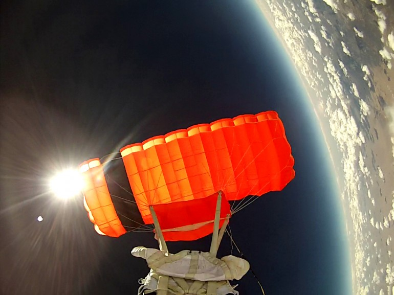
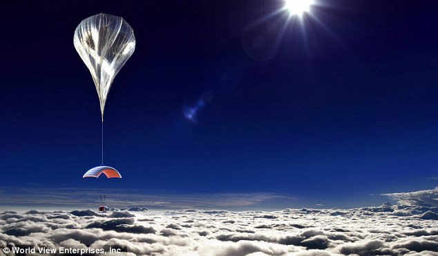
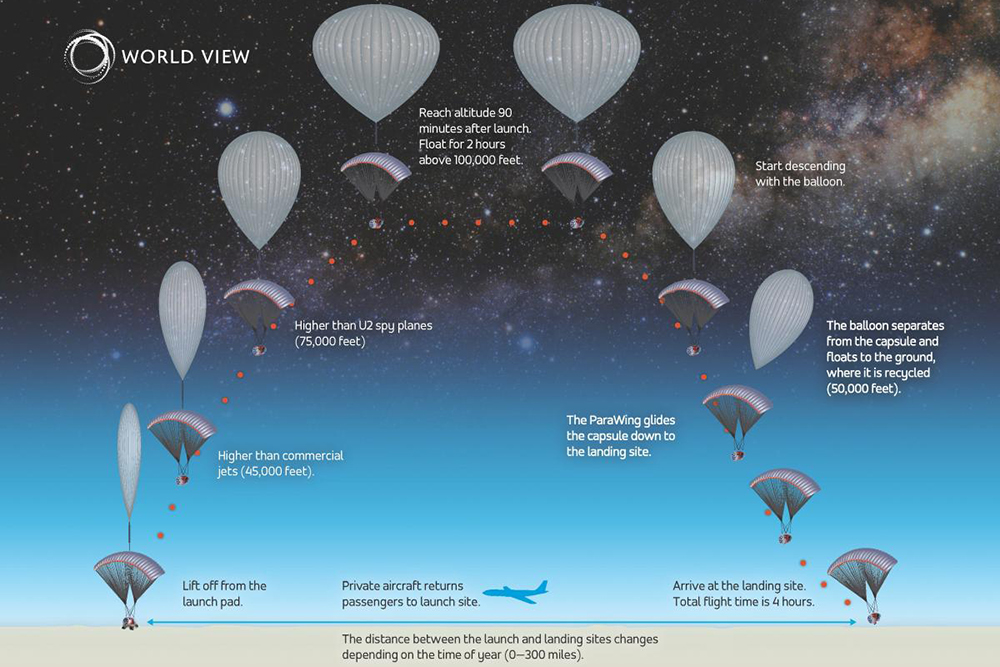

Tours!
This months featured tour...Balloon Flights
The $75,000 ballooon flights to the edge of space will let you sip a drink on-board at the BAR while soaring 19 miles above Earth.
Galaxy Travel Tours announced plans Tuesday to send people up in a capsule, lifted 19 miles by a high-altitude balloon
The flight would take 90 minutes to go up at about 1,000 feet a minute, set sail up high for 2 hours
The luxury capsule will allow passengers to walk around and get a drink from the bar
The latest space tourism venture aims to send paying customers to the edge of space and give them the same awe-inspiring view that adventurer Felix Baumgartner stared down upon - all for $75,000 a ticket.
The selling point is the view of the Earth and seeeing its curve. The venture isn't designed for passengers to experience weightlessness.
Indeed, the flite will be more like that of Red Bull daredevil Felix Baumgartner, the Austrian adventurer who leapt from a balloon 24 miles above the Earth, smashing the sound barrier during his descent and landing safely.
We promise we won’t open the door and have you jimp back to Earth.
The flight would take 90 munutes to go up at about 1,000 feet a minute, set sail up high for 2 hours with an emphasis on smooth riding, hit an altitude of 19 miles and then come back down in 40 minutes.
The capsule's interior will be roomy enough for its eight passengers to walk around and even get a drink at an on-board bar - but unfortunately there will be experiencing of weightlessnesss.
We look forward to pioneering this new, accessible and affordable spaceflight regime, and to sharing the breathtaking, once-in-a-lifetime experience with people from around the globe.'

Laith Naaman